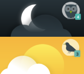

Left ☰ menu is an expandable menu for easy navigation and quick access to features.
Tap ☰ icon in the upper left corner or swipe from the left to expand the menu.
[NOTE] On phones with gesture navigation you need to tap and hold instead of the swipe to access the menu.
The content of the Left menu might be influenced by the type of home screen.
- In Tabs home screen, the options shown as tabs are hidden. If Dashboard tab is disabled, shortcuts are added to the Left menu.
- In Alarms only mode, the tracking related features are hidden, if there is no tracking history.
Chronotype#
Based on your sleep patterns in tracking history, the app will determine your chronotype and shows you the icon in the Left menu - either you are morning lark, or night owl.
Note: The app needs to have at least one month of sleep data.
Your chronotype is then represented by a banner at the very top of the Left ☰ menu.

According to the research of professor Till Roenneberg, people are born with a chronotype, and everyone is somewhere on the spectrum from owl 100% to 100% lark. Our SleepCloud study also came to the same conclusion.
To read more about chronotype, see our documentation on social jetlag.
Sleep as Android section#
Alarms#
Opens List of alarms in Dashboard mode.
Stats#
Opens Statistics section.
Graphs#
Opens Graph section.
Charts#
Opens Charts section.
Goal#
Opens Goals.
Advice#
Opens Advice.
Noise#
Opens Noise recording section.
Lullabies#
A shortcut to lullaby section.
 Achievements#
Achievements#
A shortcut to Achievement board.
Home screen section#
Dashboard#
Presents all options in cards, see details about Dashboard.
Tabs#
Presents all option in tabs, list of alarm is the main screen, see details about Tabs.
Alarms only#
Simplified mode without any tracking-related settings, read more in Alarms only mode chapter.
Support section#
Support#
Opens help-assistance dialogue.
- Documentation: Opens this online documentation at https://docs.sleep.urbandroid.org/.
- FAQ: Opens Frequently Asked Question section in the documentation - you can use the search box at the top to find the answer to your questions.
- Tutorial: Reopens the onboarding tutorial.
- Watch video: Opens YouTube promotion video.
 Forum: Opens our users forum
Forum: Opens our users forum-
Contact support: Opens mailto:support@urbandroid.org[a mail to our support email support@urbandroid.org].
- Release notes: Opens Release notes with Latest changes in Sleep and new added features.
- Report a bug: Generates an application log that can be shared with our support team to help you with any issue. Don’t hesitate to tell us what’s not working properly. We’re eager to fix it!
- Send a wearable report: Generates a log for debugging troubles with some wearables - Garmin, Samsung.
Backup#
Opens back up dialogue - for more details on Back up, see Backup.
Privacy#
Opens the Privacy section
Tell friends#
You can tell your friends about your experience with Sleep as Android.